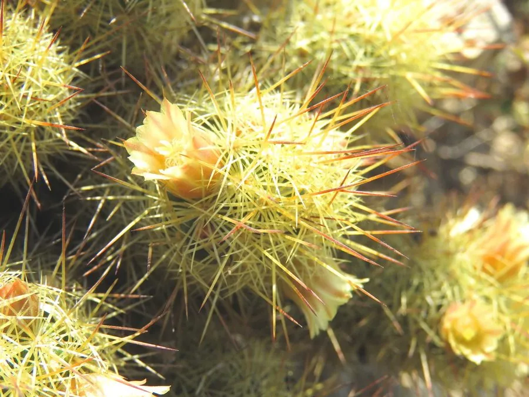

多肉植物 · 植物界
金手指 Mammillaria elongata

仙人掌科乳突球属多肉，细长茎丛生如金色手指，密生淡黄色短刺，春季开淡黄色小花，是易群生、好养的经典仙人球。
- 分类
- 门被子植物门纲木兰纲目石竹目科仙人掌科属乳突球属
- 栖息环境
- 墨西哥中部干旱高原的石质坡地，喜光、耐旱、怕积水
- 地理分布
- 原产墨西哥中部，世界各地广泛盆栽，中国各地常见
- 保护级别
- 暂无评估；CITES 附录Ⅱ（仙人掌科）
物种志
金手指为仙人掌科乳突球属多年生肉质植物，茎细长圆柱形，长 10–20 厘米，直径约 1.5–2 厘米，初直立后渐弯曲，常从基部长出许多侧芽，形成密集的丛生株。茎表有螺旋排列的乳突，每个乳突顶端生一丛淡黄色至金黄色的短刺，刺细密、贴伏，使整株呈现柔和的金色光泽。花小，淡黄色，漏斗形，直径约 1 厘米，春季自茎侧开放；果实为细长浆果。
金手指原产墨西哥中部的干旱高原，生于石质坡地和灌丛下，喜阳光充足、温暖干燥和通风良好的环境，耐旱力强，忌盆土长期潮湿和夏季闷热。它的茎丛生密集，刺色金黄，适合用小盆群栽或组合盆栽观赏。栽培以颗粒土为主，生长期干透浇透，冬季保持 5℃ 以上并严格控水；繁殖以分株和茎段扦插为主，也可播种。
形态与习性
- 株高茎长 10–20 厘米，丛生株幅可达 30 厘米
- 花期春季，花淡黄色，直径约 1 厘米
- 光照喜充足阳光，夏季高温时适当遮阴
- 水分耐旱，干透浇透，忌盆土积水
- 土壤疏松透气的颗粒土，可混入少量石灰质
- 繁殖分株、茎段扦插或播种
- 耐寒冬季需保持 5℃ 以上
- 主要用途小盆群栽、组合盆栽观赏
趣味知识
- 金手指的茎会越长越长并向下弯曲，密集成丛时像一把金色的手指。
- 它靠茎基部的侧芽不断分生，几年就能长成满满一盆。
- 乳突上的短刺是叶的变态，可减少水分蒸发并防御动物啃食。